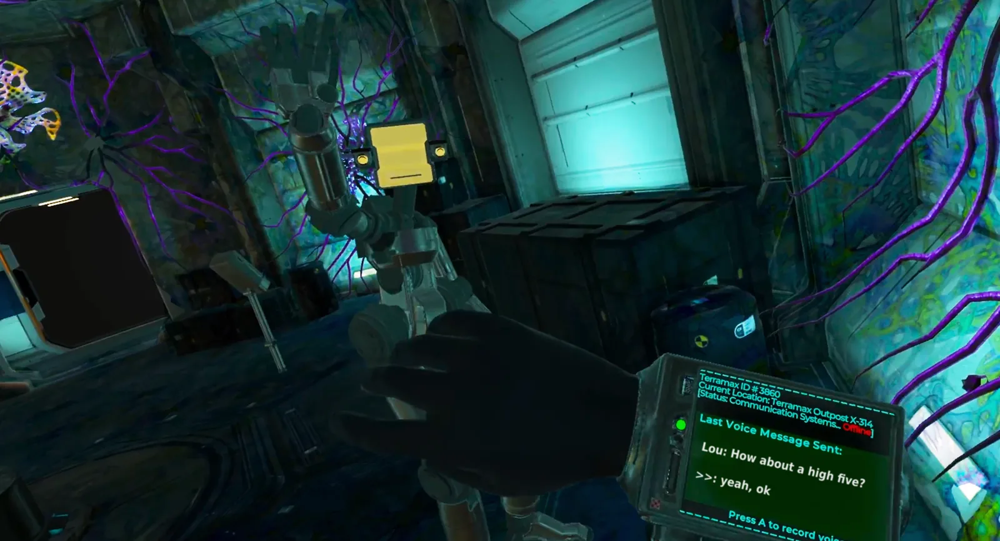

Proximity is a prototype of a narrative adventure for Quest 2, featuring conversation-driven gameplay with an eccentric robot named Lou. Players can talk with Lou, whose voice is generated in real-time, allowing Lou to respond in potentially new and original ways each play session.

This was a passion project created with a team of around 5 people started by myself and my co-founder Matt. With my experience in games and design and Matt's experience in writing and narrative we set out to create this interactive VR experience. We successfully pitched and funded the concept as well as hired a team to help create it.
I started with the thought "What if you could go on a narratively-driven adventure but you had a companion that you could turn to talk to at any point throughout it?"

The goal was to create an interactive AI character that you could develop a relationship and bond with through conversation and working through challenging circumstances together.
Apart from the creative vision, my role was creating and implementing all the player interactions, puzzle elements, as well as mission and story progression. I also created and set up all of Lou's interactions and animations with a combo of myself in a mocap suit, hand animating and FinalIK implementation.
Key Contributions
- Created and implemented all player interactions and puzzle elements
- Designed mission and story progression systems
- Created Lou's interactions and animations using motion capture and FinalIK
- Successfully pitched and funded the concept
- Built and managed a fully remote team of 5 developers